3.9. Ensemble methods¶
The goal of ensemble methods is to combine the predictions of several models built with a given learning algorithm in order to improve generalizability / robustness over a single model.
Two families of ensemble methods are usually distinguished:
In averaging methods, the driving principle is to build several models independently and then to average their predictions. On average, the combined model is usually better than any of the single model because its variance is reduced.
Examples: Bagging methods, Forests of randomized trees...
By contrast, in boosting methods, models are built sequentially and one tries to reduce the bias of the combined model. The motivation is to combine several weak models to produce a powerful ensemble.
Examples: AdaBoost, Gradient Tree Boosting, ...
3.9.1. Forests of randomized trees¶
The sklearn.ensemble module includes two averaging algorithms based on randomized decision trees: the RandomForest algorithm and the Extra-Trees method. Both algorithms are perturb-and-combine techniques [B1998] specifically designed for trees. This means a diverse set of classifiers is created by introducing randomness in the classifier construction. The prediction of the ensemble is given as the averaged prediction of the individual classifiers.
As other classifiers, forest classifiers have to be fitted with two arrays: an array X of size [n_samples, n_features] holding the training samples, and an array Y of size [n_samples] holding the target values (class labels) for the training samples:
>>> from sklearn.ensemble import RandomForestClassifier
>>> X = [[0, 0], [1, 1]]
>>> Y = [0, 1]
>>> clf = RandomForestClassifier(n_estimators=10)
>>> clf = clf.fit(X, Y)
Like decision trees, forests of trees also extend to multi-output problems (if Y is an array of size [n_samples, n_outputs]).
3.9.1.1. Random Forests¶
In random forests (see RandomForestClassifier and RandomForestRegressor classes), each tree in the ensemble is built from a sample drawn with replacement (i.e., a bootstrap sample) from the training set. In addition, when splitting a node during the construction of the tree, the split that is chosen is no longer the best split among all features. Instead, the split that is picked is the best split among a random subset of the features. As a result of this randomness, the bias of the forest usually slightly increases (with respect to the bias of a single non-random tree) but, due to averaging, its variance also decreases, usually more than compensating for the increase in bias, hence yielding an overall better model.
In contrast to the original publication [B2001], the scikit-learn implementation combines classifiers by averaging their probabilistic prediction, instead of letting each classifier vote for a single class.
3.9.1.2. Extremely Randomized Trees¶
In extremely randomized trees (see ExtraTreesClassifier and ExtraTreesRegressor classes), randomness goes one step further in the way splits are computed. As in random forests, a random subset of candidate features is used, but instead of looking for the most discriminative thresholds, thresholds are drawn at random for each candidate feature and the best of these randomly-generated thresholds is picked as the splitting rule. This usually allows to reduce the variance of the model a bit more, at the expense of a slightly greater increase in bias:
>>> from sklearn.cross_validation import cross_val_score
>>> from sklearn.datasets import make_blobs
>>> from sklearn.ensemble import RandomForestClassifier
>>> from sklearn.ensemble import ExtraTreesClassifier
>>> from sklearn.tree import DecisionTreeClassifier
>>> X, y = make_blobs(n_samples=10000, n_features=10, centers=100,
... random_state=0)
>>> clf = DecisionTreeClassifier(max_depth=None, min_samples_split=1,
... random_state=0)
>>> scores = cross_val_score(clf, X, y)
>>> scores.mean()
0.97...
>>> clf = RandomForestClassifier(n_estimators=10, max_depth=None,
... min_samples_split=1, random_state=0)
>>> scores = cross_val_score(clf, X, y)
>>> scores.mean()
0.999...
>>> clf = ExtraTreesClassifier(n_estimators=10, max_depth=None,
... min_samples_split=1, random_state=0)
>>> scores = cross_val_score(clf, X, y)
>>> scores.mean() > 0.999
True

3.9.1.3. Parameters¶
The main parameters to adjust when using these methods is n_estimators and max_features. The former is the number of trees in the forest. The larger the better, but also the longer it will take to compute. In addition, note that results will stop getting significantly better beyond a critical number of trees. The latter is the size of the random subsets of features to consider when splitting a node. The lower the greater the reduction of variance, but also the greater the increase in bias. Empirical good default values are max_features=n_features for regression problems, and max_features=sqrt(n_features) for classification tasks (where n_features is the number of features in the data). The best results are also usually reached when setting max_depth=None in combination with min_samples_split=1 (i.e., when fully developing the trees). Bear in mind though that these values are usually not optimal. The best parameter values should always be cross- validated. In addition, note that bootstrap samples are used by default in random forests (bootstrap=True) while the default strategy is to use the original dataset for building extra-trees (bootstrap=False).
When training on large datasets, where runtime and memory requirements are important, it might also be beneficial to adjust the min_density parameter, that controls a heuristic for speeding up computations in each tree. See Complexity of trees for details.
3.9.1.4. Parallelization¶
Finally, this module also features the parallel construction of the trees and the parallel computation of the predictions through the n_jobs parameter. If n_jobs=k then computations are partitioned into k jobs, and run on k cores of the machine. If n_jobs=-1 then all cores available on the machine are used. Note that because of inter-process communication overhead, the speedup might not be linear (i.e., using k jobs will unfortunately not be k times as fast). Significant speedup can still be achieved though when building a large number of trees, or when building a single tree requires a fair amount of time (e.g., on large datasets).
Examples:
3.9.1.5. Feature importance evaluation¶
The relative rank (i.e. depth) of a feature used as a decision node in a tree can be used to assess the relative importance of that feature with respect to the predictability of the target variable. Features used at the top of the tree are used contribute to the final prediction decision of a larger fraction of the input samples. The expected fraction of the samples they contribute to can thus be used as an estimate of the relative importance of the features.
By averaging those expected activity rates over several randomized trees one can reduce the variance of such an estimate and use it for feature selection.
The following example shows a color-coded representation of the relative importances of each individual pixel for a face recognition task using a ExtraTreesClassifier model.

In practice those estimates are stored as an attribute named feature_importances_ on the fitted model. This is an array with shape (n_features,) whose values are positive and sum to 1.0. The higher the value, the more important is the contribution of the matching feature to the prediction function.
3.9.1.6. Totally Random Trees Embedding¶
RandomTreesEmbedding implements an unsupervised transformation of the data. Using a forest of completely random trees, RandomTreesEmbedding encodes the data by the indices of the leaves a data point ends up in. This index is then encoded in a one-of-K manner, leading to a high dimensional, sparse binary coding. This coding can be computed very efficiently and can then be used as a basis for other learning tasks. The size and sparsity of the code can be influenced by choosing the number of trees and the maximum depth per tree. For each tree in the ensemble, the coding contains one entry of one. The size of the coding is at most n_estimators * 2 ** max_depth, the maximum number of leaves in the forest.
As neighboring data points are more likely to lie within the same leaf of a tree, the transformation performs an implicit, non-parametric density estimation.
Examples:
- Hashing feature transformation using Totally Random Trees
- Manifold learning on handwritten digits: Locally Linear Embedding, Isomap... compares non-linear dimensionality reduction technics on handwritten digits.
See also
Manifold learning techniques can also be useful to derive non-linear representations of feature space, also these approaches focus also on dimensionality reduction.
3.9.2. AdaBoost¶
The module sklearn.ensemble includes the popular boosting algorithm AdaBoost, introduced in 1995 by Freud and Schapire [FS1995].
The core principle of AdaBoost is to fit a sequence of weak learners (i.e., models that are only slightly better than random guessing, such as small decision trees) on repeatedly modified versions of the data. The predictions from all of them are then combined through a weighted majority vote (or sum) to produce the final prediction. The data modifications at each so-called boosting iteration consist of applying weights 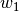, 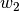, ..., 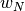 to each of the training samples. Initially, those weights are all set to 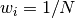, so that the first step simply trains a weak learner on the original data. For each successive iteration, the sample weights are individually modified and the learning algorithm is reapplied to the reweighted data. At a given step, those training examples that were incorrectly predicted by the boosted model induced at the previous step have their weights increased, whereas the weights are decreased for those that were predicted correctly. As iterations proceed, examples that are difficult to predict receive ever-increasing influence. Each subsequent weak learner is thereby forced to concentrate on the examples that are missed by the previous ones in the sequence [HTF2009].

AdaBoost can be used both for classification and regression problems:
- For multi-class classification, AdaBoostClassifier implements AdaBoost-SAMME and AdaBoost-SAMME.R [ZZRH2009].
- For regression, AdaBoostRegressor implements AdaBoost.R2 [D1997].
3.9.2.1. Usage¶
The following example shows how to fit an AdaBoost classifier with 100 weak learners:
>>> from sklearn.cross_validation import cross_val_score
>>> from sklearn.datasets import load_iris
>>> from sklearn.ensemble import AdaBoostClassifier
>>> iris = load_iris()
>>> clf = AdaBoostClassifier(n_estimators=100)
>>> scores = cross_val_score(clf, iris.data, iris.target)
>>> scores.mean()
0.9...
The number of weak learners is controlled by the parameter n_estimators. The learning_rate parameter controls the contribution of the weak learners in the final combination. By default, weak learners are decision stumps. Different weak learners can be specified through the base_estimator parameter. The main parameters to tune to obtain good results are n_estimators and the complexity of the base estimators (e.g., its depth max_depth or minimum required number of samples at a leaf min_samples_leaf in case of decision trees).
Examples:
- Discrete versus Real AdaBoost compares the classification error of a decision stump, decision tree, and a boosted decision stump using AdaBoost-SAMME and AdaBoost-SAMME.R.
- Multi-class AdaBoosted Decision Trees shows the performance of AdaBoost-SAMME and AdaBoost-SAMME.R on a multi-class problem.
- Two-class AdaBoost shows the decision boundary and decision function values for a non-linearly separable two-class problem using AdaBoost-SAMME.
- Decision Tree Regression with AdaBoost demonstrates regression with the AdaBoost.R2 algorithm.
References
| [FS1995] | Y. Freud, and R. Schapire, “A decision theoretic generalization of online learning and an application to boosting”, 1997. |
| [ZZRH2009] | J. Zhu, H. Zou, S. Rosset, T. Hastie. “Multi-class AdaBoost”, 2009. |
| [D1997] |
|
| [HTF2009] | T. Hastie, R. Tibshirani and J. Friedman, “Elements of Statistical Learning Ed. 2”, Springer, 2009. |
3.9.3. Gradient Tree Boosting¶
Gradient Tree Boosting or Gradient Boosted Regression Trees (GBRT) is a generalization of boosting to arbitrary differentiable loss functions. GBRT is an accurate and effective off-the-shelf procedure that can be used for both regression and classification problems. Gradient Tree Boosting models are used in a variety of areas including Web search ranking and ecology.
The advantages of GBRT are:
- Natural handling of data of mixed type (= heterogeneous features)
- Predictive power
- Robustness to outliers in input space (via robust loss functions)
The disadvantages of GBRT are:
- Scalability, due to the sequential nature of boosting it can hardly be parallelized.
The module sklearn.ensemble provides methods for both classification and regression via gradient boosted regression trees.
3.9.3.1. Classification¶
GradientBoostingClassifier supports both binary and multi-class classification via the deviance loss function (loss='deviance'). The following example shows how to fit a gradient boosting classifier with 100 decision stumps as weak learners:
>>> from sklearn.datasets import make_hastie_10_2
>>> from sklearn.ensemble import GradientBoostingClassifier
>>> X, y = make_hastie_10_2(random_state=0)
>>> X_train, X_test = X[:2000], X[2000:]
>>> y_train, y_test = y[:2000], y[2000:]
>>> clf = GradientBoostingClassifier(n_estimators=100, learning_rate=1.0,
... max_depth=1, random_state=0).fit(X_train, y_train)
>>> clf.score(X_test, y_test)
0.913...
The number of weak learners (i.e. regression trees) is controlled by the parameter n_estimators; The maximum depth of each tree is controlled via max_depth. The learning_rate is a hyper-parameter in the range (0.0, 1.0] that controls overfitting via shrinkage.
Note
Classification with more than 2 classes requires the induction of n_classes regression trees at each at each iteration, thus, the total number of induced trees equals n_classes * n_estimators. For datasets with a large number of classes we strongly recommend to use RandomForestClassifier as an alternative to GBRT.
3.9.3.2. Regression¶
GradientBoostingRegressor supports a number of different loss functions for regression which can be specified via the argument loss; the default loss function for regression is least squares ('ls').
>>> import numpy as np
>>> from sklearn.metrics import mean_squared_error
>>> from sklearn.datasets import make_friedman1
>>> from sklearn.ensemble import GradientBoostingRegressor
>>> X, y = make_friedman1(n_samples=1200, random_state=0, noise=1.0)
>>> X_train, X_test = X[:200], X[200:]
>>> y_train, y_test = y[:200], y[200:]
>>> clf = GradientBoostingRegressor(n_estimators=100, learning_rate=1.0,
... max_depth=1, random_state=0, loss='ls').fit(X_train, y_train)
>>> mean_squared_error(y_test, clf.predict(X_test))
6.90...
The figure below shows the results of applying GradientBoostingRegressor with least squares loss and 500 base learners to the Boston house price dataset (sklearn.datasets.load_boston). The plot on the left shows the train and test error at each iteration. The train error at each iteration is stored in the train_score_ attribute of the gradient boosting model. The test error at each iterations can be optained via the staged_predict method which returns a generator that yields the predictions at each stage. Plots like these can be used to determine the optimal number of trees (i.e. n_estimators) by early stopping. The plot on the right shows the feature importances which can be obtained via the feature_importances_ property.
Examples:
3.9.3.3. Mathematical formulation¶
GBRT considers additive models of the following form:
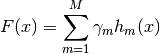
where 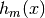 are the basis functions which are usually called weak learners in the context of boosting. Gradient Tree Boosting uses decision trees of fixed size as weak learners. Decision trees have a number of abilities that make them valuable for boosting, namely the ability to handle data of mixed type and the ability to model complex functions.
Similar to other boosting algorithms GBRT builds the additive model in a forward stagewise fashion:
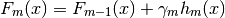
At each stage the decision tree is chosen to
minimize the loss function  given the current model
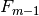 and its fit 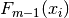
given the current model
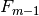 and its fit 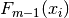
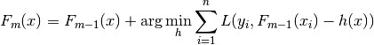
The initial model 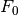 is problem specific, for least-squares regression one usually chooses the mean of the target values.
Note
The initial model can also be specified via the init argument. The passed object has to implement fit and predict.
Gradient Boosting attempts to solve this minimization problem numerically via steepest descent: The steepest descent direction is the negative gradient of the loss function evaluated at the current model which can be calculated for any differentiable loss function:
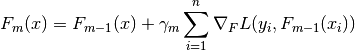
Where the step length 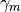 is chosen using line search:

The algorithms for regression and classification only differ in the concrete loss function used.
3.9.3.3.1. Loss Functions¶
The following loss functions are supported and can be specified using the parameter loss:
- Regression
- Least squares ('ls'): The natural choice for regression due to its superior computational properties. The initial model is given by the mean of the target values.
- Least absolute deviation ('lad'): A robust loss function for regression. The initial model is given by the median of the target values.
- Huber ('huber'): Another robust loss function that combines least squares and least absolute deviation; use alpha to control the sensitivity w.r.t. outliers (see [F2001] for more details).
- Quantile ('quantile'): A loss function for quantile regression. Use 0 < alpha < 1 to specify the quantile. This loss function can be used to create prediction intervals (see Prediction Intervals for Gradient Boosting Regression).
- Classification
- Binomial deviance ('deviance'): The negative binomial log-likelihood loss function for binary classification (provides probability estimates). The initial model is given by the log odds-ratio.
- Multinomial deviance ('deviance'): The negative multinomial log-likelihood loss function for multi-class classification with n_classes mutually exclusive classes. It provides probability estimates. The initial model is given by the prior probability of each class. At each iteration n_classes regression trees have to be constructed which makes GBRT rather inefficient for data sets with a large number of classes.
3.9.3.4. Regularization¶
3.9.3.4.1. Shrinkage¶
[F2001] proposed a simple regularization strategy that scales
the contribution of each weak learner by a factor  :
:
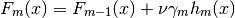
The parameter is also called the learning rate because
it scales the step length the the gradient descent procedure; it can
be set via the learning_rate parameter.
The parameter learning_rate strongly interacts with the parameter n_estimators, the number of weak learners to fit. Smaller values of learning_rate require larger numbers of weak learners to maintain a constant training error. Empirical evidence suggests that small values of learning_rate favor better test error. [HTF2009] recommend to set the learning rate to a small constant (e.g. learning_rate <= 0.1) and choose n_estimators by early stopping. For a more detailed discussion of the interaction between learning_rate and n_estimators see [R2007].
3.9.3.4.2. Subsampling¶
[F1999] proposed stochastic gradient boosting, which combines gradient boosting with bootstrap averaging (bagging). At each iteration the base classifier is trained on a fraction subsample of the available training data. The subsample is drawn without replacement. A typical value of subsample is 0.5.
The figure below illustrates the effect of shrinkage and subsampling on the goodness-of-fit of the model. We can clearly see that shrinkage outperforms no-shrinkage. Subsampling with shrinkage can further increase the accuracy of the model. Subsampling without shrinkage, on the other hand, does poorly.
For subsample < 1, the deviance on the out-of-bag samples in the i-the iteration is stored in the attribute oob_score_[i]. Out-of-bag estimates can be used for model selection (e.g. to determine the optimal number of iterations).
Another strategy to reduce the variance is by subsampling the features analogous to the random splits in Random Forests. The size of the subsample can be controlled via the max_features parameter.
Examples:
3.9.3.5. Interpretation¶
Individual decision trees can be interpreted easily by simply visualizing the tree structure. Gradient boosting models, however, comprise hundreds of regression trees thus they cannot be easily interpreted by visual inspection of the individual trees. Fortunately, a number of techniques have been proposed to summarize and interpret gradient boosting models.
3.9.3.5.1. Feature importance¶
Often features do not contribute equally to predict the target response; in many situations the majority of the features are in fact irrelevant. When interpreting a model, the first question usually is: what are those important features and how do they contributing in predicting the target response?
Individual decision trees intrinsically perform feature selection by selecting appropriate split points. This information can be used to measure the importance of each feature; the basic idea is: the more often a feature is used in the split points of a tree the more important that feature is. This notion of importance can be extended to decision tree ensembles by simply averaging the feature importance of each tree (see Feature importance evaluation for more details).
The feature importance scores of a fit gradient boosting model can be accessed via the feature_importances_ property:
>>> from sklearn.datasets import make_hastie_10_2
>>> from sklearn.ensemble import GradientBoostingClassifier
>>> X, y = make_hastie_10_2(random_state=0)
>>> clf = GradientBoostingClassifier(n_estimators=100, learning_rate=1.0,
... max_depth=1, random_state=0).fit(X, y)
>>> clf.feature_importances_
array([ 0.11, 0.1 , 0.11, ...
Examples:
3.9.3.5.2. Partial dependence¶
Partial dependence plots (PDP) show the dependence between the target response and a set of ‘target’ features, marginalizing over the values of all other features (the ‘complement’ features). Intuitively, we can interpret the partial dependence as the expected target response [1] as a function of the ‘target’ features [2].
Due to the limits of human perception the size of the target feature set must be small (usually, one or two) thus the target features are usually chosen among the most important features.
The Figure below shows four one-way and one two-way partial dependence plots for the California housing dataset:
One-way PDPs tell us about the interaction between the target response and the target feature (e.g. linear, non-linear). The upper left plot in the above Figure shows the effect of the median income in a district on the median house price; we can clearly see a linear relationship among them.
PDPs with two target features show the interactions among the two features. For example, the two-variable PDP in the above Figure shows the dependence of median house price on joint values of house age and avg. occupants per household. We can clearly see an interaction between the two features: For an avg. occupancy greather than two, the house price is nearly independent of the house age, whereas for values less than two there is a strong dependence on age.
The module partial_dependence provides a convenience function plot_partial_dependence to create one-way and two-way partial dependence plots. In the below example we show how to create a grid of partial dependence plots: two one-way PDPs for the features 0 and 1 and a two-way PDP between the two features:
>>> from sklearn.datasets import make_hastie_10_2
>>> from sklearn.ensemble import GradientBoostingClassifier
>>> from sklearn.ensemble.partial_dependence import plot_partial_dependence
>>> X, y = make_hastie_10_2(random_state=0)
>>> clf = GradientBoostingClassifier(n_estimators=100, learning_rate=1.0,
... max_depth=1, random_state=0).fit(X, y)
>>> features = [0, 1, (0, 1)]
>>> fig, axs = plot_partial_dependence(clf, X, features)
For multi-class models, you need to set the class label for which the PDPs should be created via the label argument:
>>> from sklearn.datasets import load_iris
>>> iris = load_iris()
>>> mc_clf = GradientBoostingClassifier(n_estimators=10,
... max_depth=1).fit(iris.data, iris.target)
>>> features = [3, 2, (3, 2)]
>>> fig, axs = plot_partial_dependence(mc_clf, X, features, label=0)
If you need the raw values of the partial dependence function rather than the plots you can use the partial_dependence function:
>>> from sklearn.ensemble.partial_dependence import partial_dependence
>>> pdp, axes = partial_dependence(clf, [0], X=X)
>>> pdp
array([[ 2.46643157, 2.46643157, ...
>>> axes
[array([-1.62497054, -1.59201391, ...
The function requires either the argument grid which specifies the values of the target features on which the partial dependence function should be evaluated or the argument X which is a convenience mode for automatically creating grid from the training data. If X is given, the axes value returned by the function gives the axis for each target feature.
For each value of the ‘target’ features in the grid the partial dependence function need to marginalize the predictions of a tree over all possible values of the ‘complement’ features. In decision trees this function can be evaluated efficiently without reference to the training data. For each grid point a weighted tree traversal is performed: if a split node involves a ‘target’ feature, the corresponding left or right branch is followed, otherwise both branches are followed, each branch is weighted by the fraction of training samples that entered that branch. Finally, the partial dependence is given by a weighted average of all visited leaves. For tree ensembles the results of each individual tree are again averaged.
Footnotes
| [1] | For classification with loss='deviance' the target response is logit(p). |
| [2] | More precisely its the expectation of the target response after accounting for the initial model; partial dependence plots do not include the init model. |
Examples:
References
| [F2001] | (1, 2) J. Friedman, “Greedy Function Approximation: A Gradient Boosting Machine”, The Annals of Statistics, Vol. 29, No. 5, 2001. |
| [F1999] |
|
| [HTF2009] |
|
| [R2007] |
|